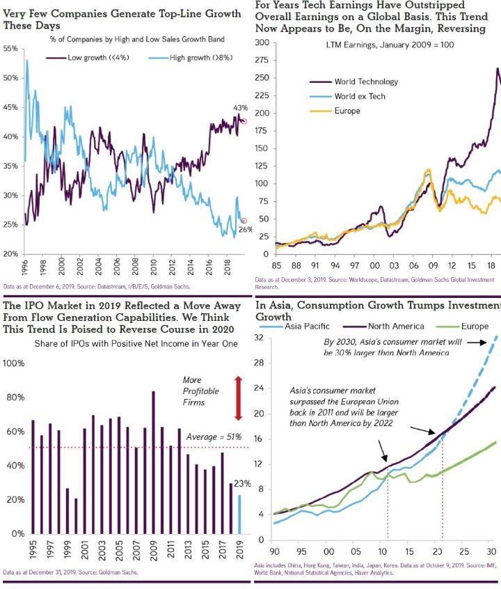

Viikon kuumat linkit
Linkkejä matkan varrelta... hyvää viikonloppua!
"The risk of paying too high a price for good-quality stocks - while a real one - is not the chief hazard confronting the average buyer of securities. Observation over many years has taught us that the chief losses to investors come from the purchase of low-quality securities at times of favorable business conditions.” - Benjamin Graham
Shakkipeli on suljettu systeemi. Sellainen, jossa pelin lopputulokseen vaikuttaa ainoastaan pelaajien taito. Kaikki siirtovaihtoehdot ovat koko ajan kaikille nähtävissä. Elämässä näin ei juuri koskaan ole. Ei myöskään sijoittamisessa. Jos sitä ei tiedosta, voi harhautua luulemaan tuuria taidoksi. Onnistuneen treidin, diilin tai ylennyksen jälkeen on hyvä muistuttaa itselleen, että erittäin todennäköisesti se ei ollut pelkästään omaa ansiota. Satunnaisuudella ja muilla ihmisillä oli myös roolinsa. Jo sitä ei tiedosta, ollaan ajautumassa vaarallisille vesille ja luullaan omista taidoistaan liikoja. Asiat ovat harvoin helppoja. Se, että markkinoiden voittaminen tuntuu joskus helpolta, on markkinoiden yksi isoimmista ansoista. Helppoa se ei nimittäin koskaan ole.
USA:ssa monet nettivälittäjät laskivat välityspalkkiot nollaan viime syksynä. Ensi merkit viittaavat siihen, että sijoittajat ovat ottaneet tämän innolla vastaan ja alkaneet treidaamaan aktiivisemmin. Saman vaikutuksen voisi kuvitella olevan vuodenvaihteessa tulleilla osakesäästötileillä (ei vähintään sen vuoksi, että jotkin välittäjät tarjosivat alhaisia välityspalkkioita ensimmäisiksi kuukausiksi). Globaalisti pitoajat ovat kuitenkin olleet laskusuunnassa jo vuosikymmeniä. Vielä 1960-luvulla keskimäärinen osakkeen pitoaika oli kahdeksan vuotta! 1975 regulaatiolla poistettiin kiinteät välityspalkkiot ja välittäjien kujanjuoksu oli käynnistynyt. Tänäpäivänä keskimääräinen pitoaika on alle vuoden. Vaikkakin nykyään (lähes) ilmaista, aktiivinen kaupankäynti kuitenkin altistaa muille kustannuksille, kuten käyttäytymisharhoista johtuville epäsuotuisille päätöksille. Pidempi pitoaika mahdollistaa tuoton esiintulon satunnaisuuden seasta. Siksi pitkäaikaissijoittaminen tarjoaa sijoittajalle edun.
Vaikka kuukausisäästäjän ei pitäisi yrittää ajoittaa markkinaa (helppoa se ei ainakaan ole), tuntuu monelle olevan tärkeää pitää ylimääräistä käteistä. Paras sijoitussuunnitelma on se, josta pystyy pitämään kiinni läpi nousu- ja laskumarkkinoiden. Jos siitä kiinni pitäminen vaatii käteisen turvaa, niin kaikin mokomin. Siinä on kuitenkin muutama haaste: Ensinnäkin tuo suunnitelma olettaa, että olisi kykenevä laittamaan ylimääräiset rahat töihin silloin, kun markkina on laskenut tarpeeksi. Laskupaineessa voi psykologisesti olla vaikeaa ostaa. Toisekseen, lasku tulee kyllä lopulta, mutta laskuun lähtö voi tapahtua selvästi korkeammalta tasolta. Historia on osoittanut, että rahat kannattaisi olla sijoitettuna jokainen hetki, eikä odottaa korjausta. Lopuksi, vaikka tietäisikin varmuudella, missä seuraava tulevaisuuden pohjanoteeraus tapahtuu (kukaan ei tiedä), on historiallisesti siltikin saanut vain minimaalisen edun vs jos sijoittaisi jokainen kuukausi. Miksi siis nähdä se vaiva?
Viime vuonna globaali videopelimarkkina oli ~USD150bn. Sen odotetaan kasvavan 10% luokkaa p.a. ollen 2021 USD180bn. Tuosta kasvusta suurin osa tulee mobiilipeleistä, jotka jo nyt ovat ~54% koko piirakasta (konsolipelit 24%, PC-pelit 22%). Niiden osuuden odotetaan nousevan lähes 60%:iin. Mobiilipelien alalle tulon esteet ovat alhaiset, joten tekijöitä riittää. Kestäviin skaalaetuihin kiinni pääseminen onkin sitten vaikeampaa. Mitkä ovat mobiilipelialan isoimmat trendit?
Professori Galloway on sekä hyvin perehtynyt teknologia- ja kuluttajasektoreihin että viihdyttävä. Hänen kirjoituksensa ovat tyypillisesti yleensä raflaavia, ja sinällään niitä ei tule ottaa varauksetta (niin kuin ei mitään muutakaan). Mutta koska hänen ajatuksensa ovat jopa ylitseampuvia, eikä hän pelkää sanoa niitä, kirvoittavat ne pohtimaan asioita, joita ei välttämättä muuten tulisi ajateltua. Siksi hänen joka vuotiset ennustuksensa ovat yleensä mielenkiintoisia ja viihdyttäviä. Niin nytkin.
Markkinapaikoissa kuten eBay, AirBnB tai Uber/Lyft on lähtökohtaisesti kyse tyhjänpanttina seisseiden kiinteiden omaisuuserien hyödyntämisestä. Tarjontapuolen innostusta tulla mukaan markkinapaikalle se, että heille omaisuuserän (kuten käyttämätön roina, makuuhuone tai auto) rajakustannus on nolla tai hyvin alhainen. Siksi markkinapaikan luoja (esim startup) pääsee käsiksi edulliseen tarjontaan, jolloin kysyntäpuolikin (kuluttaja) usein myös hyötyy. Se taasen edesauttaa tärkeän kysyntä/tarjonta verkostovaikutuksen saamisessa käyntiin. Tarjonnan ollessa rajallista, voi ensimmäisenä mahdollisuuden haistava startup myös saada markkinan lukittua itselleen. Vastaavasta kiinteiden omaisuuserien hyödyntämisestä on kyse myös Woltin, Foodoran jne bisneksessä. Mutta niissä ravintoloitsijan insentiivit mahdollistavat aggressiivisen palveluntarjoajien välisen hintakilpailun (kuten on esim USA:ssa nähty).
Podcastit:
Mielenkiintoinen ja monipuolinen keskustelulong/short -hedge fundia pyörittävän Dan McMurtrien kanssa. Hänet tunnetaan kenties paremmin viihdyttävästä Twitter-tilistään @SuperMugatu. Keskustelu kiertää heidän strategiastaan teknologia-, kuluttaja- ja healthcare-sektoreilta eri esimerkkikeissien kautta. Hyviä pointteja shorttauksen vinkkelistä positiointiin, riskien hallintaan ja lähestymistapoihin. Esim. heidän suosimat shorttiteesit ovat lähteneet yhtiöiden kilpailutilanteesta käsin. McMurtrie on ollut myös laittamassa pystyy Bangladeshiin keskittyvää VC-rahastoa, joten ne ajatukset ovat yhdistävät kehittyvien markkinoiden potentiaalia ja riskisijoituksia. Lisäksi kaverit ovat tehneet teesin deittimarkkinoista, joten lopuksi hyvät tipsit kaikille sinkuille!
Sam Zell on tuttu kaikille, jotka ovat katsoneet CNBC:tä. Hän on usein kommentoimassa pitkän sijoittajahistoriansa pohjalta. Zell on tehnyt USD5bn+ omaisuutensa pääosin kiinteistösijoituksista aloittaen josku 60-luvulla. Podcast-haastattelu käy läpi hänen alkuhistoriaansa sijoittajana ja oppejaan, joita hän on matkan varrella kerryttänyt. Riskien tunnistamisen tärkeys. Sijoittajan pitäisi myös uskaltaa mennä sinne, jossa on vähemmän kilpailua, jolloin korkeampien tuottojenkin mahdollisuus on parempi. Pitää siis uskaltaa olla erilainen.
Viikon kuva:
Viikon kuva(t) tulee tällä kertaa KKR:n global outlook-paketista, jossa on 100+ hyvää ja havainnollistavaa kuvaa markkinoista ja taloudesta. Oheen poimittu muutama.
